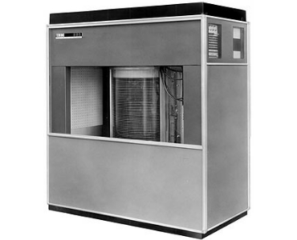
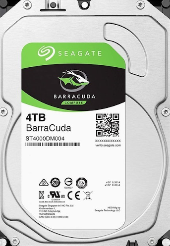
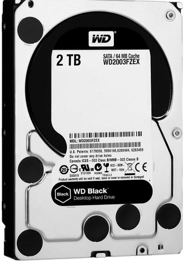
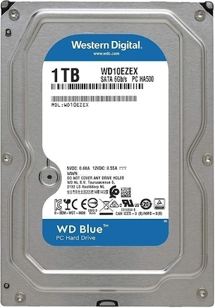

Hard Disk (HD)
O HD (Hard Disk) ou HDD (Hard Disk Drive) pode ser traduzido como disco rígido. O disco rígido é um dispositivo de armazenamento de dados que compõe um computador. Um dos primeiros HDs foi o IBM 350 que surgiu no final da década de 1950, ele equipava o computador IBM RAMAC 305. O HD IBM 350 era formado por 50 discos de 24 polegadas de diâmetro, era muito grande, muito pesado e sua capacidade de armazenamento era de aproximadamente 3,75 MB. O HD foi se desenvolvendo e sua capacidade de armazenamento foi aumentando, podendo atingir TeraBytes (TB) de armazenamento, o seu tamanho foi diminuindo e se tornou mais versátil, podendo ser um HD interno ou um HD externo.

Todo computador precisa de um lugar para armazenar os dados dos usuários, como por exemplo um HD, sendo assim, quanto maior a capacidade de armazenamento desse HD e quanto menor e mais leve ele for, melhor será para o usuário. Pensando nessa capacidade de armazenamento o desenvolvimento de HDs estão cada vez melhores. Já existem HDs com capacidade de armazenamento de TeraBytes (TB).
Pensando nesse componente essencial para o computador, trouxemos os 5 melhores HDs comercializados em 2021 e 2022, com eles você pode melhorar a capacidade de armazenamento e desempenho do seu computador, fazendo com que o seu trabalho, estudo e lazer sejam mais proveitosos.
Há alguns pontos que são muito importantes no momento de adquirir um HD. O primeiro deles é se certificar de que o HD que você escolheu é compatível com o seu tipo de computador.
O segundo ponto é verificar se a capacidade de armazenamento para a sua demanda será suficiente. Atualmente existem modelos de HDs que oferecem de 300 GB até 8 TB de armazenamento. Quanto mais a capacidade de armazenamento, mais dados o HD será capaz de armazenar.
O terceiro ponto é observar a taxa de transferência do HD, a taxa de transferência é a velocidade na qual o hardware consegue fazer a leitura dos arquivos que estão salvos. Portanto, quanto maior a taxa, mais rápido o computador responderá a certos comandos, como por exemplo, a inicialização do sistema e abertura de arquivos. Se você é um usuário na qual não precisa de um desempenho muito alto, os HDS com uma taxa de transferência entre 150 e 180 mb/s podem fornecer um bom desempenho. Mas se é um usuário de nível avançado que demanda um melhor desempenho pois trabalha com alta qualidade de fotos, vídeos e gráficos, então irá ter que pagar por um HD na qual a taxa de transferência seja mais alta, atualmente há opções que ultrapassam os 300 mb/s, mas o custo é bem alto.
Além da taxa de transferência, as rotações por minuto (rpm) também afetam a performance de um HD. Quanto mais alto o rpm, mais rápido o disco rígido se movimenta, agilizando a leitura das informações pelo HD. Atualmente os HDs variam entre 3200 rpm e 7200 rpm. Para uso doméstico, HDs entre 4000 rpm e 5200 rpm já são suficientes, pois essas velocidades entregam uma ótima performance para tarefas do dia a dia a um custo mais acessível. Mas, para aqueles que desejam alto desempenho em jogos ou programas pesados, HDs de 7200 rpm são mais indicados.
Outro ponto que vale a pena observar é a capacidade da memória cache. A memória cache é uma pequena parte da memória que o HD interno utiliza para enviar dados de uma seção do disco magnético para outra. Quantidades maiores de memória cache concedem ao HD mais velocidade na transferência dos dados, além de proporcionar um funcionamento mais fluido ao produto. Os hardwares atuais podem variar muito nesse quesito, com modelos que oferecem de 8 MB até 256 MB de memória cache. Assim, quanto maior for a quantidade da memória cache, maior será a velocidade de processamento. As maiores quantidades são mais indicadas para uso profissional, devido ao seu alto custo.
Vejamos quais são os HDs mais comercializados atualmente
SEAGATE - Barracuda Compute ST4000DM004

Esse HD possui um ótimo custo por Terabyte (TB), possui um bom preço custando +/- R$ 949,00. Possui uma ótima qualidade, principalmente se o usuário trabalha com criação e edição de conteúdo. Ele possui 4 TB, taxa de transferência de 190 MB/s, velocidade de 5400 RPM e memória cache de 256 MB.
WD Black WD2003FZEX (3.5 Gamming HDD)

O HD WD Black é super indicado para usuários que desejam um ótimo desempenho para jogos, modelagem 3D e criação de sistemas. Porém seu preço não é tão barato, por ser um HD mais alto nível o seu valor é +/- R$ 1.885,63. Ele possui 2 TB, taxa de transferência de 164 MB/s, velocidade de 7200 RPM e memória cache de 64 MB. Esse é um modelo que diminui drasticamente os tempos de processamento em várias ocasiões. . Além disso, ele vem com um ótimo software gratuito para backup, o Acronis True Image WD Edition.
Seagate Barracuda ST1000DM010

O Seagate Barracuda ST1000DM010 é um dos melhores HDs com custo-benefício comercializados atualmente custando +/- R$ 354,00. Esse HD é perfeito para quem procura uma opção acessível e com performance comparável à de modelos mais poderosos, pois possui 1 TB, taxa de transferência de 210 MB/s, velocidade de 7200 RPM e memória cache de 64 MB.
WD Blue WD10EZEX

O HD WD Blue é uma boa opção para aqueles que desejam um hardware para uso doméstico, estudos, jogos, documentos e arquivos. Ele oferece uma boa capacidade de armazenamento para a maioria dos usuários, pois possui 1 TB, taxa de transferência de 150 MB/s, velocidade de 7200 RPM e memória cache de 64 MB, e custa +/- R$348,00.